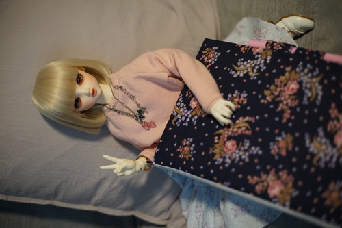
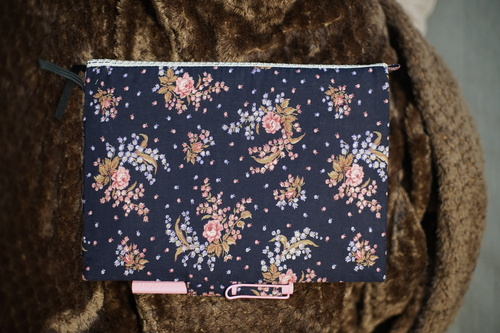
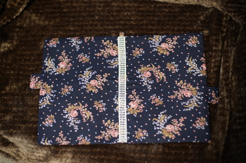
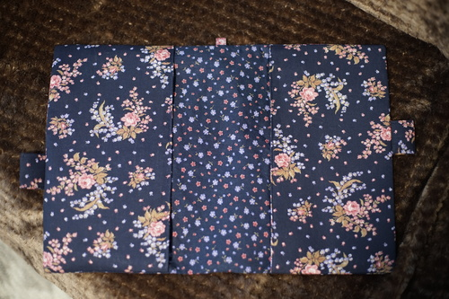
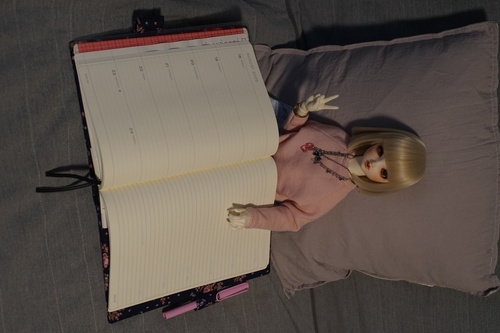
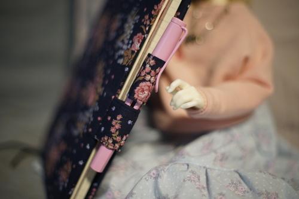
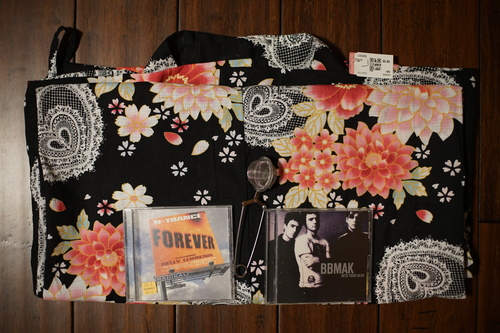

Another day another Leuchtturm right?? So I went shopping with Kohi, as usual, and we ended up at Barnes and Noble. I wanted to look at their Midori notebooks and see if they had any Leuchtturm planners left. The sale on planners had increased from 50% to 70% off, but I didn't see any left on the shelf! I checked out the Leuchtturm kiosk anyway and found 2 Leuchtturm 2025 planners. The first was a green softcover A5 and the second was a black hardcover B5. I ended up choosing the hardcover B5 for a few reasons. Someone had already removed the shrink wrap on it, but I didn't see any mischief inside. I didn't even remember to look at the Midori section!
B5 is approximately, but not exactly, composition notebook sized. I have two B5 shitajiki from Daiso that fit nearly perfectly in this journal! This journal is small enough to fit in my itabag, so I can take it with me without carrying a full sized backpack. Every new journal needs a cover right? Black on its own isn't very kawaii.
Everyone remembers our good friend Blog Post 234, right? Not me!! For this project, I added 3 cm to the base size of cover instead of the 3.5 cm I suggested. I used 1 cm seam allowance and the interfacing is 1 cm larger than the base cover. This is EXACTLY the minimum you can add and have the cover still fit. I was unable to add top stitching to it, but I think it still turned out well. Absolutely do not go smaller than 1 cm extra for these covers!
 The interfacing stuck a lot better after half following the instructions. I used the cotton setting this time instead of wool and it stuck much better.
I also did not following my notes from last time. I basted the whole thing together and then realized I had gotten the first step wrong and had to rip it completely apart. Thank god they weren't 2.5 stitches and were longer 4 instead. I would have been seam ripping for HOURS.
Added bonus levels of difficulty I added were using 3 different fabrics, a keychain loop, and lace decoration along the spine. The main fabric is the only fully visible pattern, but I didn't have enough to make it fully in this fabric. I absolutely love the print!!! It's beautiful! I have 2 other fabrics that are similar color schemes with different prints that were used as well, but can't be seen without taking out the journal from the cover. Some small points I paid attention to were lining up the pen loops so that there was a rose showing when viewed from the side.
I am nearly out of interfacing now so no new journals for me. I think I have all bases covered with 3 and a sketchbook. Also now that I have many pen loops, I want to fill them with fountain pens. You just can't win.
You didn't think Kohi and I didn't hit up a bunch of thrift stores before the mall right??
Score!!! I'm lucky I didn't have to fight Kohi for this one because it would be really cute in a gyaru outfit. This one has little straps to help put it on without extra hardware.
for Ryan
I am so done drinking tea out of a french press. Back to my teapot at last
!!!!!! I love these guys!!!
Omake: I saw a squirrel carrying a nibbled pumpkin up a tree and drop it on accident!